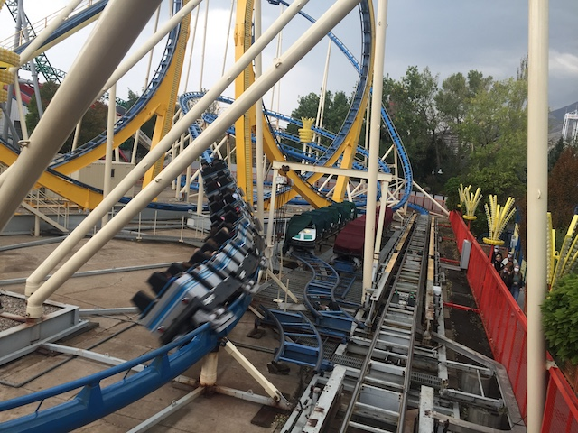
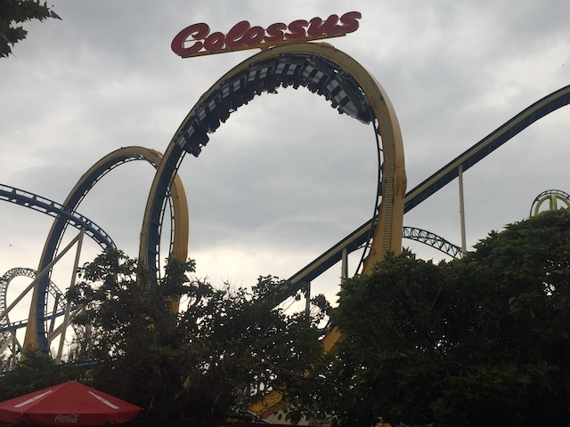
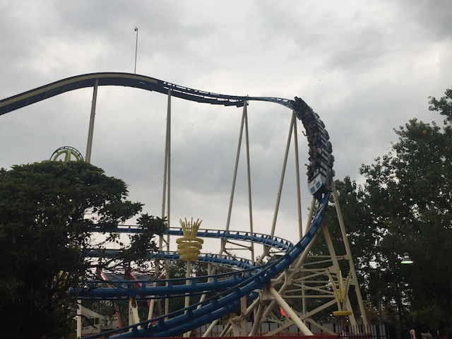
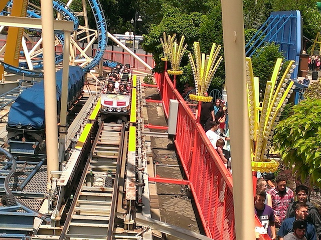
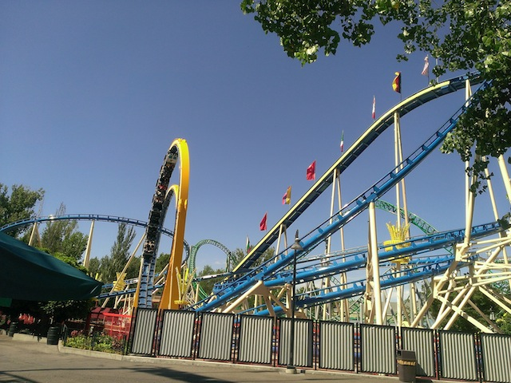
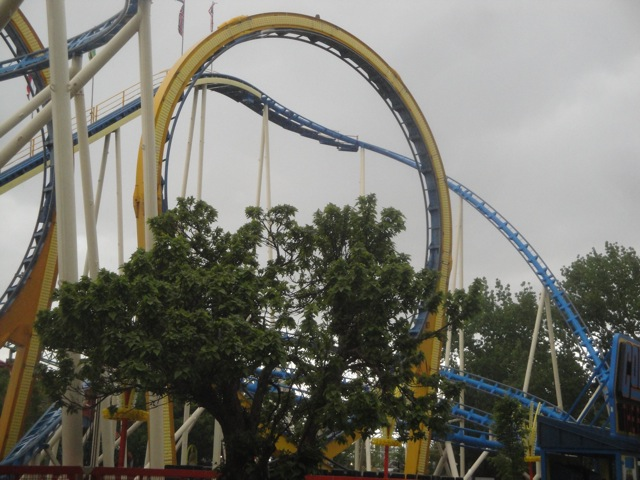
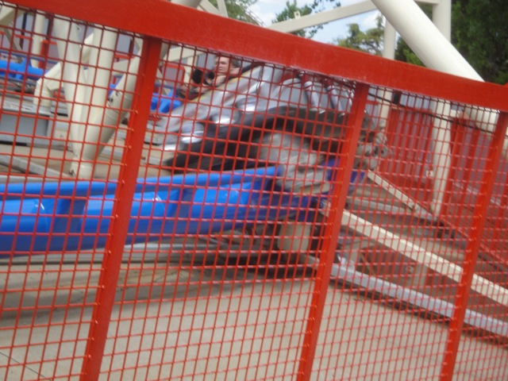
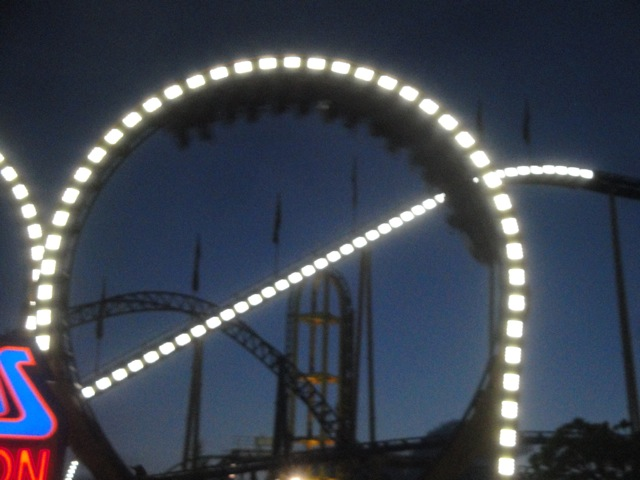
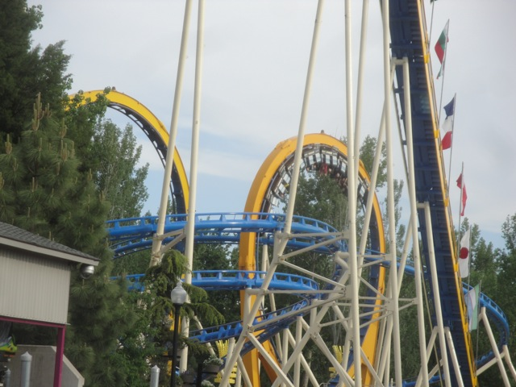
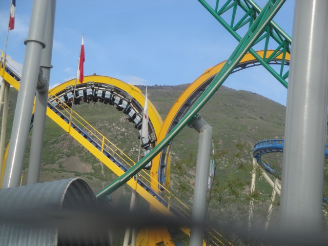

| |
Collosus the Fire Dragon Review

We're here at Lagoon. Today's ride we'll be reviewing for you is Collosus the Fire Dragon. This is one of the few Schwarzkoph Double Loopers left. It's technically not a clone of Laser thanks to a little extra track, but it's pretty much the same ride. So I count them as clones. Which is awesome because this ride KICKS ASS!!! We get in the trains and pull down the lap bars. And, we're off!! We then climb up the lifthill. When we look to our right, we then see the two loops and get excited as we get to go upsidedown without OTSRs today. Once we crest the top of the lifthill, we then go through a small turn before falling into the twisted drop. The drop is fun as we are leaning to the right, but we're still gaining a lot of speed for a ride of this size (It looks a lot bigger onride than it does offride). After the drop, we roar straight up into Loop #1. This loop is pretty damn powerful, pulling a lot of Gs and pinning us into our seats. Then we get to do it again in Loop #2. It just presses us with so many Gs. And it manages to bring a smile to our face. After roaring through the loops, we roar straight into a banked turn that gives us some good forces. And let me tell you a little secret about this curve. If you sit by yourself on this ride and on the right side and don't fight it, YOU GET KNOCKED DOWN!!! BUT YOU GET UP AGAIN!!! THEY'RE NEVER GONNA KEEP YOU DOWN!!! before heading back to thread the second loop. Ok, that's pretty cool. We then head back into a spiral helix back down which gives us quite a lot of speed, as well as some more cool laterals. After that, we roar through some straight track that goes right inbetween the two loops. While it doesn't mean anything, it's just there to look cool. We then turn into a downward helix down by the drop. This provides us with some more awesome forces. We're shredding through the helix, and right after that, we glide through a big curve until the brakes come. Dude, Collosus the Fire Dragon ass!!!! It's an awesome ride and one of the better attractions in the park. In fact, these Double Looping Schwarzkophs are just AMAZING. It's a real shame that they're becoming rare rides. Well, definetly make sure you ride it when visiting Lagoon.
8/10
Location: Lagoon
Opened on the German Fair Circuit in 1981
Relocated to Lagoon in 1983
Built by: Schwarzkopf
Last Ridden: September 19, 2020
I have ridden this exact same ride at the following parks.
Dorney Park
Collosus the Fire Dragon Photos


















Home
|